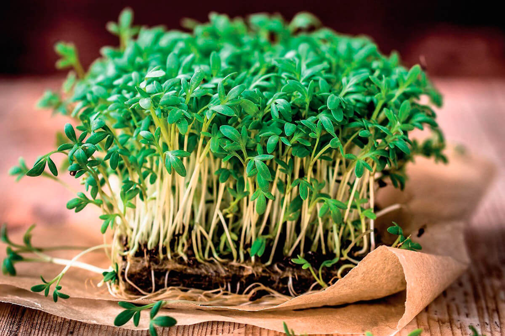

КРЕСС-САЛАТ
Микрозелень кресс-салата — однолетнее зеленое растение, которое можно легко выращивать в домашних условиях. За счет присутствия горчичного масла в составе продукта, его вкус можно сравнить с хреном или горчицей, только немного нежнее. Употреблять в пищу можно, когда зелень достигнет 5-6 см. Окрас листьев у салата в основном зеленый, но в зависимости от сорта, может иметь желтый, или фиолетовый оттенок.
Свежие листья салата содержат такие минеральные соли, как калий, йод, железо, кальций, фосфор, серу, магний и других полезных для организма веществ. В составе продукции также входит аскорбиновая кислота, витамин В, каротин, рутин, горчичное эфирное масло, а также лепидин. Употребление кресс-салата помогает: улучшить пищеварение организма; возбудить аппетит; снизить кровяное давление; улучшить сон; справиться с заболеваниями дыхательных путей; избавиться от кашля и болей в горле.
Зеленый салат также является отличным антибактериальным и мочегонным препаратом. Отростки зелени помогают избавиться от лихорадок. Сок растения используют в качестве средства при анемии, а порошок из семян применяют как горчичник при простуде. На этом полезные свойства микрозелени кресс-салата не заканчиваются. Благодаря ее постоянному употреблению в организме происходит целый ряд положительных изменений: улучшается работа пищеварения, приходит в норму аппетит, устраняются процессы брожения в кишечнике; из организма выводятся токсины и продукты жизнедеятельности клеток, улучшается обмен веществ; содержащиеся в зелени антиоксиданты оказывают омолаживающее действие, помогают нормализовать сон, стабилизируют работу нервной системы; добавляя кресс-салат в витаминные коктейли и салаты, можно улучшить состояние кожи, избавиться от высыпаний. Микрозелень подходит для употребления детям, беременным женщинам, пожилым людям, укрепляет и поддерживает их здоровье.